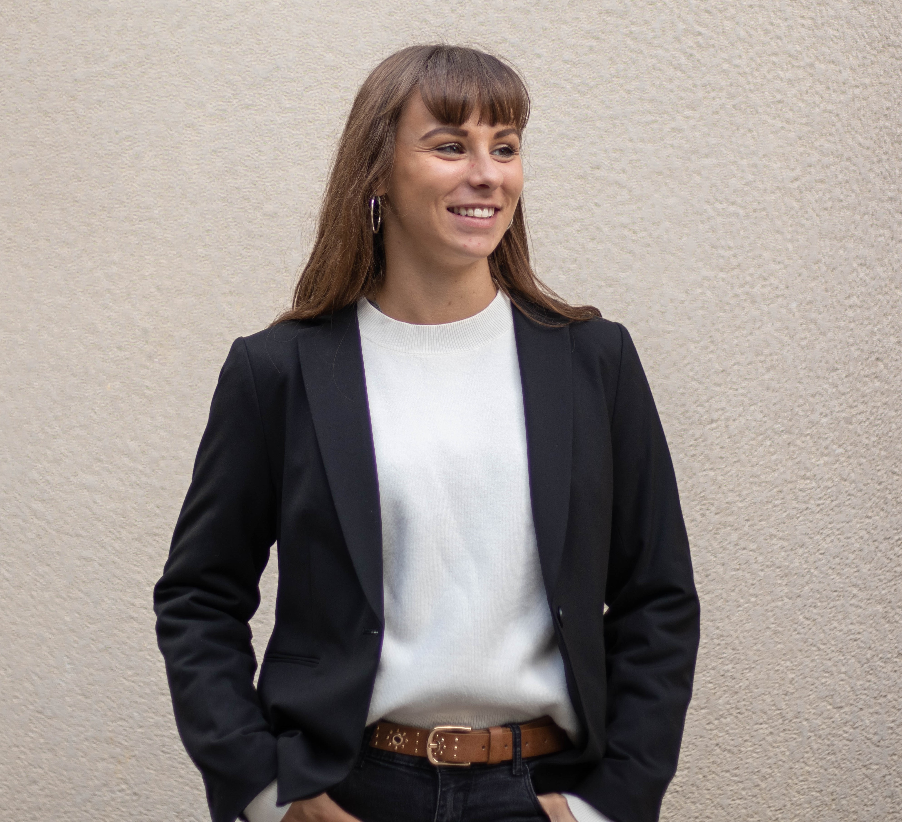
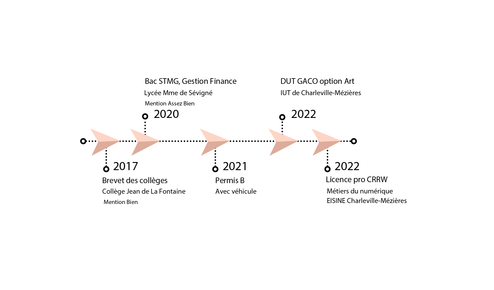
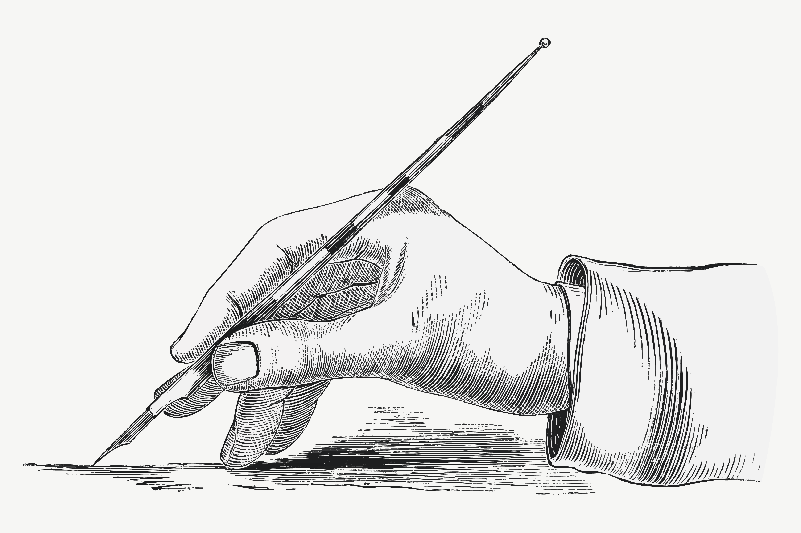
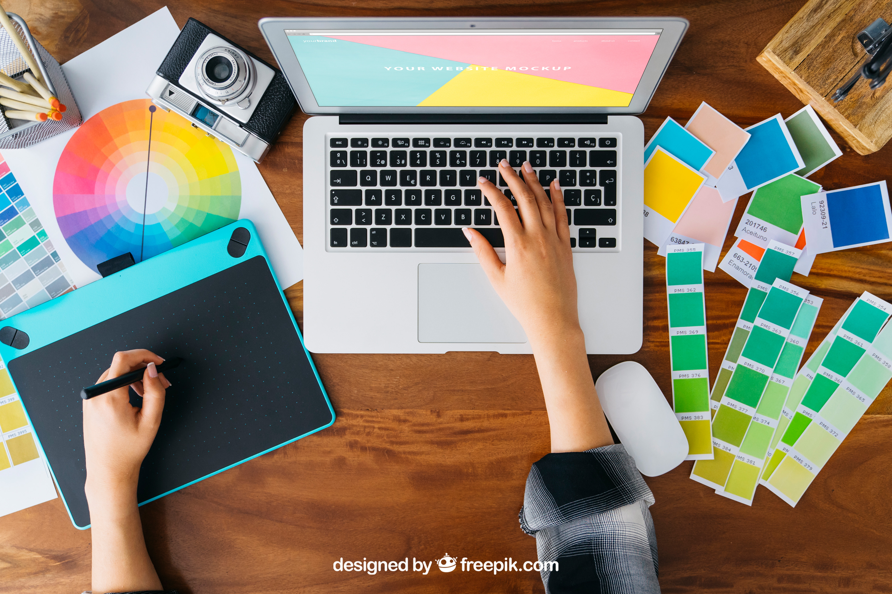
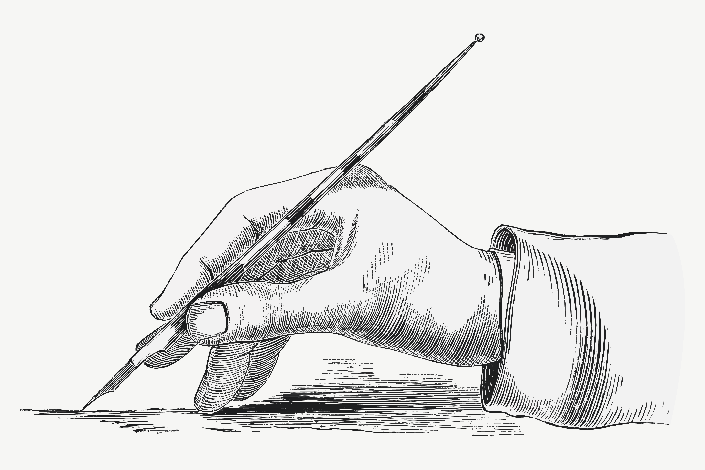
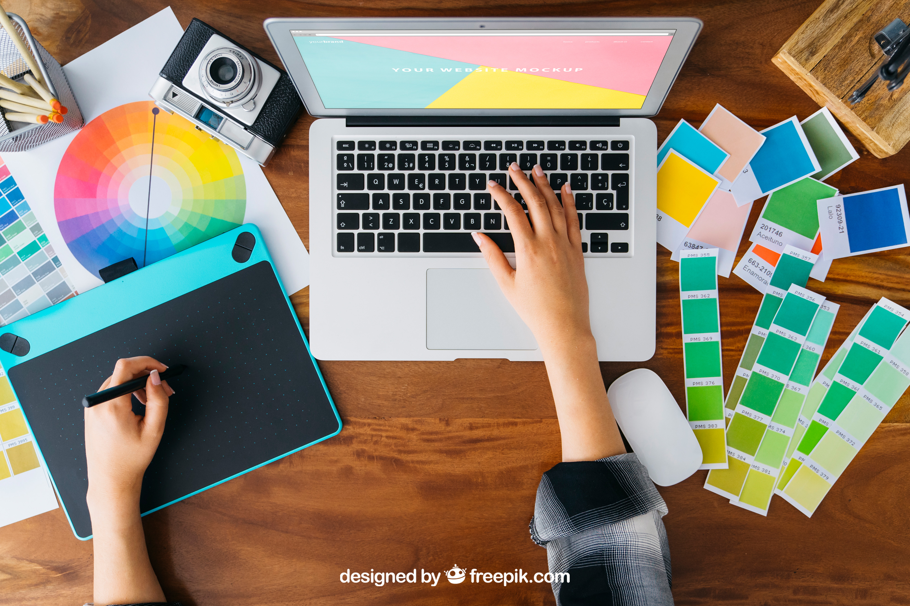

Julia DARDENNE
Infographiste
- Créative
- Organisée
- Dynamique
Formations
Expériences
2020
2020-2021
2021-2022
2022
Stage en imprimerie
SOPAIC REPRO
Secrétariat
Accueil des clients
Suivi de leur dossier
Comptabilité
Infographie
Gestions des commandes
SOPAIC REPRO
Secrétariat
Accueil des clients
Suivi de leur dossier
Comptabilité
Infographie
Gestions des commandes
Projets Tutorés
IUT DE CHARLEVILLE-
MEZIERES
GacoenChasse
Gestion d'évenement
Création graphiques diverses
Affiches, logos, flyers
Gestion de réseaux sociaux
Contact avec de futurs
partenaires
IUT DE CHARLEVILLE-
MEZIERES
GacoenChasse
Gestion d'évenement
Création graphiques diverses
Affiches, logos, flyers
Gestion de réseaux sociaux
Contact avec de futurs
partenaires
Projets Tutorés
IUT DE CHARLEVILLE-
MEZIERES
MGEN
Création de support
de communication
Affiches, flyers, plans
Contact avec de futurs
partenaires
Négociations de contrats
IUT DE CHARLEVILLE-
MEZIERES
MGEN
Création de support
de communication
Affiches, flyers, plans
Contact avec de futurs
partenaires
Négociations de contrats
Stage en imprimerie
SOPAIC REPRO
Gestion de dossiers
Création graphiques diverses
Affiches, logos, flyers,
cartes de visites,
enseigne, vitrophanie,
panneaux, publicitaires,
étiquettes, badge...
SOPAIC REPRO
Gestion de dossiers
Création graphiques diverses
Affiches, logos, flyers,
cartes de visites,
enseigne, vitrophanie,
panneaux, publicitaires,
étiquettes, badge...
Compétences
Outils
Travail en autonomie
Travail d'équipe
Français : Langue maternelle
Anglais: Niveau A2
Espagnol: Niveau A1
Adobe Illustrator
Adobe Photoshop
Adobe Indesign
Langage HTML
Langage CSS
Langage PHP
Langage Javascript
Canva
Word
Powerpoint
Excel
Loisirs

 


